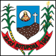

Conhecendo o Território Bacia do Paramirim Município de Botuporã
| Temas das pesquisas: | Dados: |
|---|---|
| Municípios Limítrofes |
|
| Área | 627,612 km²[2022] de área |
| Altitude | Situado a 639 metros de altitude |
| Coordenadas geográficas | Latitude 13° 23’ 4” Sul | Longitude 42° 31’ 39” Oeste |
| Clima | O clima do município é semiárido |
| Temperatura Média | 24.2ºC |
| Vegetação | O principal bioma do município é a caatinga e o cerrado |
| Hidrografia | É caracterizado pelos rios principais: Riacho da Rapadura, Córrego Sapiranga, Córrego Santana, Rio Riachão e o Córrego Boi Manso. A maior parte do município está inserida na bacia hidrográfica do Rio São Francisco |
| População Absoluta | 11.024 pessoas [2022] |
| População Relativa | 17,56 hab/km² [2022] |
| Principais Atividades Econômicas | Possui uma agricultura que se baseia na policultura de milho, feijão e mandioca e na criação de bovinos e aves |
| Principais Manifestações Culturais |
|
| Equipamentos Culturais |
|
| Unidades de Saúde Existentes |
|
| Esgotamento Sanitário(%) | 29,4% da população tem acesso aos serviços de esgotamento sanitário adequado(2010) |
| Áreas de APP | --- |
| IDH | 0,575 |
| Plano Diretor | --- |
Breve História do município
O topônimo Botuporã deriva do tupi-guarani e significa "monte belo".
Região primitivamente habitada pelos índios tuxás, foi colonizada na metade do século XVIII pelos portugueses, que se estabeleceram, constituindo famílias. O município nasceu com o primeiro nome de Fazenda Caititu, fundada pelos primeiros colonizadores portugueses, das famílias Marques e Castro. Casaram-se na comunidade indígena, onde o mesmo ocorreu com os espanhóis das famílias Pamplona e Maia.
Com o decorrer do tempo, a Fazenda Caititu foi prosperando e outras propriedades foram surgindo ao seu redor, formando um pequeno núcleo urbano. Em 1910, Acúrcio José de Oliveira edificou uma capela na praça onde hoje tem o seu nome. Construiu uma residência e fixou-se no comércio de tecido. Na época adquiriu uma imagem do Sagrado Coração de Jesus e passou a festejá-la, sendo padroeiro do município.
Nascido assim sob a proteção da cruz, na fé em Deus, o pequeno povoado foi crescendo e por volta de 1922, passando por essa localidade, o bispo D. Juvêncio de Brito, e em sua companhia frei Francisco, realizaram as primeiras Santas Missões na Fazenda Caititu. Na mesma época, os religiosos constataram a existência de um monte de imediações da localidade e mandaram abrir uma estrada, ergueram uma grande cruz de madeira neste local, benzeram e deram o nome de Monte Belo, o qual se progrediu e em 1926, foi realizada a primeira feira-livre. Do antigo Caititu, pouco restava, o núcleo urbano se expandia cada vez mais, em função da agropecuária. Em 1936, Monte Belo foi elevado à categoria de Distrito de Paz, subordinado ao município de Macaúbas.
Pelo Decreto-lei Estadual n.º 141, de 31 de dezembro de 1943, o distrito de Monte Belo passou a denominar-se Botuporã, nome derivado do tupi-guarani e significa "monte belo", em razão da existência de um município em Minas Gerais com o nome Monte Belo.
Com o passar do tempo, a localidade crescia, chegando até mesmo a ter representantes no poder Legislativo. Pequenas povoações davam-lhe “status” de cidade. Do povoado de Pajeú, veio o Sr. Alípio Queiroz Marques, que se estabeleceu no lugar e se elegeu vereador para a Câmara Municipal de Macaúbas. Botuporã se desenvolvia, então o Sr. Alípio Queiroz Marques e um grupo de homens de bem, entre eles Joaquim Mendonça, João Nunes, Brasilino Marques França e Joaquim de Oliveira, esboçaram um movimento emancipacionista que teve sucesso, apesar da forte restrição de Macaúbas, que não concordava em perder seu distrito mais importante depois da sede. Com a comunidade conscientizada, finalmente teve o plebiscito marcado.
As bandeiras tremulavam, a alegria contagiava, tudo era festa na manhã de 22 de março de 1962. O então governador Juracy Magalhães sancionava a Lei que criava o município de Botuporã. As eleições foram marcadas para o dia 15 de novembro. Candidatava-se para a Prefeitura de Botuporã pela UDN o Sr. Alípio Queiroz Marques e pelo PSD o Sr. Osvaldo Marques. Após a apuração, o povo de Botuporã elegeu o seu primeiro prefeito, aquele que empunhou a bandeira emancipacionista, Alípio Queiroz Marques, sendo assim consolidada a emancipação. A posse ocorreu no dia 7 de abril de 1963.
Fonte: Veja em Contatos| Temas da pesquisas: | Dados sobre o município de Botuporã-Bahia |
|---|---|
| Bandeira e Brasão de Armas |  |
| Origem do nome | O topônimo Botuporã deriva do tupi-guarani e significa "monte belo". |
| Padroeira | Sagrado Coração de Jesus |
| Legislação Ambiental Municipal | Lei Municipal de n° 070 de 29 de março de 2019. |
| Principais fontes de água |
|
| Unidade de Conservação | Não possui |
| Principais fontes de energia renovável | Não possui |
| Empreendimentos minerários |
|
| Plano de Saneamento Básico | Não possui |
| Projetos de reciclagem | Cooperativa de Trabalho e Serviços de Limpeza, Coleta e Reciclagem de Resíduos Sólidos - COOPRESS em Botuporã, BA. |
| Descarte de lixo eletrônico | Não possui |
| Maiores impactos ambientais |
|
| Conselhos municipais |
|
| Referências |
|